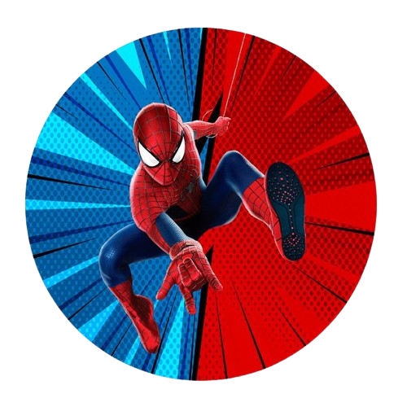

Sobre Mim
Meu nome é João Carvalho, tenho 18 anos e estudo na Escola Cedup. Desde pequeno, sempre fui fascinado por tecnologia e, ao longo dos anos, essa paixão se transformou em um verdadeiro interesse por programação. Atualmente, estou focado em aprender tudo o que posso sobre desenvolvimento de software.
Tenho um desejo enorme de trabalhar com programação, especialmente na área de desenvolvimento. A sensação de criar algo útil a partir do zero é incrível.